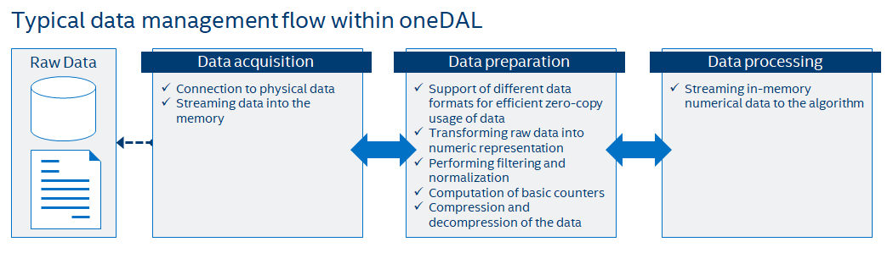
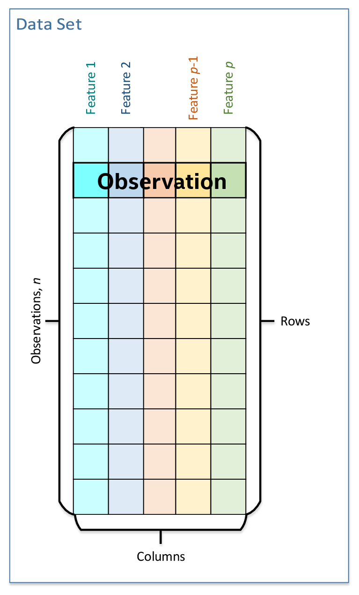
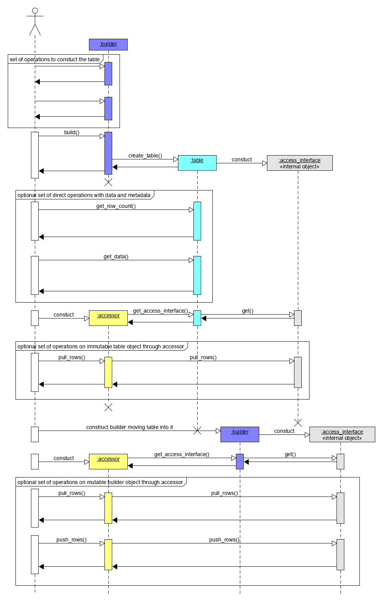

Data management¶
This section includes descriptions of concepts and objects that operate with data. For oneDAL, such set of operations, or data management, is distributed among different stages of a data analytics pipeline. From data management angle of view, this pipeline contains three main steps of data acquisition, preparation, and computation:
Raw data acquisition.
Transferring out-of-memory data into in-memory representation from sources like databases, files, remote storages, etc.
Data preparation.
Performing data normalization, filtering.
Recovery of missing values
Compression and decompression of the data.
Conversion of data to numeric representation.
Supporting different in-memory data formats.
Computation of statistics on numerical data like mean, variance, covariance, etc.
Algorithm computation.
Streaming in-memory numerical data to the algorithm.
In complex usage scenarios, data flow can go through these three stages back and forth. For example, when the full data are not available at the start of the computation, it can be done step-by-step with blocks of data. After computation on the current block the next one should be obtained and prepared.
{kind=link}
Key concepts¶
oneDAL provides a set of concepts to operate on out-of-memory and in-memory data during different stages of the data analytics pipeline.
Dataset¶
The most common concept over the data in oneDAL is a dataset. This is an in-memory or out-of-memory tabular view of data, where table rows represent observations and columns represent features.
{kind=link}
The dataset comes across all stages of the data analytics pipeline. For example:
Data source¶
Data source is a concept of an out-of-memory storage of a dataset. It is used on data acquisition and data preparation stages for:
Dataset extraction from databases, files, remote storages, etc.
Dataset loading into the local memory of the device. Data are not always fit the local memory, especially when processing with accelerators. Data source provides an ability to load data by batches and orchestrates its efficient extraction directly into local memory of the device. Therefore data source enables complex scenarios of data analytics, like online computations.
Filtering or normalization of feature values being extracted.
Recovery (emulation) of missing feature values.
outlier detection and recovery of the abnormal data.
Dataset transformation to numerical representation. Data sources can automatically transform non-numeric categorical and continuous values of data into one of numeric data formats.
Table¶
Table is a concept of a dataset with in-memory numerical data. It is used on data-preparation and data-processing stages to:
Store heterogeneous (in the general case) in-memory data with variety of data formats (dense, sparse, chunked, contiguous, etc.)
Avoid unnecessary data copies on conversion from external data representations.
Transfer memory ownership of the data from user responsibility to the table, or share it between them
Connect with Data source to convert out-of-memory dataset representation to in-memory view
Stream the data to the algorithm
Access the underlying data on a device in a required data format, e.g. by blocks of defined data layout.
Table provide read-only access to the data inside it for thread-safety reasons and better integration with external entities, thus, table concept is immutable.
This concept may also have different logical organization and physical format of the data inside it.
Logically, table is a Dataset with \(n\) rows and \(p\) columns. Each row represent an observation and each column is a feature of a dataset. Thus, table contains \((n \times p)\) data elements, while the original (physical) amount of bytes needed to store the data can be different.
Physically, table can be organized in different ways: as a homogeneous, contiguous array of bytes, as heterogeneous list of arrays of different data types, in a compressed-sparse-row format, etc.
For details, see Tables section.
Metadata¶
Metadata concept is assotiated with a Dataset and holds an information about its structure and type. This information shall be enough to determine the particular type of a dataset, and helps to understand how to interact with dataset in oneDAL (for example, how to use it on a particular stage of data analytics pipeline or how to access its data).
Metadata for all datasets shall contain:
The number of rows \(n\) and columns \(p\) in a dataset
data type of each feature
The kind of a dataset (e.g. Table or Data source)
Note
Metadata can contain both compile-time and run-time information. For example, basic compile-time metadata is the type of a dataset - whether it is a particular Data source or a Table. Run-time information can contain the feature types and data types of a dataset.
Note
Each concept that concretizes a dataset definition (like different tables or data sources) shall contain additional metadata which describes this concept as the whole. For example, Data source and Table concepts have different sets of metadata since they represent different kinds of a dataset.
Table builder¶
A table builder is a concept that associated with particular Table type and is used on data-preparation and data-processing stages for:
Iterative (in general case) construction of a Table from another tables or different in-memory Dataset representations
Construction of a Table from different entities that hold pieces of the dataset, like arrays, pointers to the memory, external entities, etc.
Changing dataset values. Since Table is an immutable dataset, builder provides an ability to change the values of data in the dataset under construction.
Incapsulating construction process of a Table. This is used to hide an implementation details, which (1) are unnecessary for user, (2) allow to select most appropriate table implementation for every particular case.
Providing an additional information how to create a Table inside an algorithm for results. This information may include metadata, memory allocators need to be used, or even particular implementation of a table.
Table builder shall be a stateful object which state is updated every call of operation which updates data or Metadata of Dataset under construction. It shall have build() member function which takes current snapshot of builder state and creates a Table object upon it.
For details, see Table builders section.
Accessor¶
Accessor is a concept which defines sinle way how to get the data from a in-memory numerical Dataset. It allows:
To make uniform access to the data from various sets of different objects, like tables or table builders without exposing their implementation details.
To convert a variety of numeric data formats into a smaller set (e.g. for better vectorization).
To give an ability to focus on the data acquisition in the desired data format with a wanted set of operations over the data.
To make read-only, read-write and write-only access to the data.
For details, see Accessors section.
Use-case example for table, accessor and table builder¶
This section gives an basic usage scenario of Table, Table builder and Accessor concepts and relations between them. The following diagram shows objects of these concepts, which are highlighted by colors:
Table builder objects are blue
Table objects are cyan
accessors are yellow
objects with gray background color are not a part of oneDAL specification and they are provided just for illustration purposes
To perform some computations based on the dataset, one shall create a Table object first. It can be done using Data source or Table builder objects depending on the situation. The diagram briefly shows a situation when Table is created from Table builder interatively with calls of various member functions that update internal state of the builder. Then, the build() method is called which takes a snapshot of current builder state and creates a table from it.
Once table object created, the data inside it can be accessed using member functions of table object or with help of read-only accessor as shown on the diagram. Table can be used in the computations as input or parameter of some algorithm.
Algorithms results also contain table objects. If one needs to change the data inside some table, builder object can be constructed for this. If table object is unique (just only one reference exists), it can be moved inside builder - thus no copy operations of data will be performed. Data inside table builder can be retrieved by read-only, write-only or read-write accessors.
Accessors present on the diagram allows to get data uniformly from tables and table builders as blocks of rows.
Internal “access_interface” object present on the diagram depicts how table and table builder may share one implementation with different set of operations defined upon it on different stages of the lifetime. It shows how accessor object might know how to get data from different kind of objects.
{kind=link}